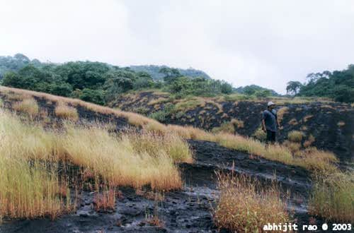
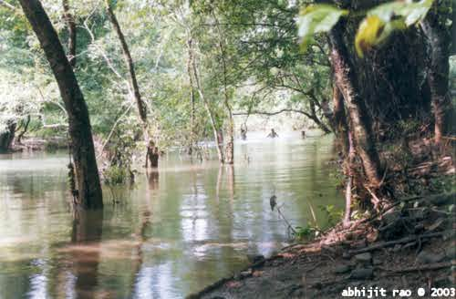

| The caves can be seen on the hill face. |
| The two large main caves. The one on the right is one of the earliest ones. |
| This is the biggest Buddha statue in Maharashtra. |
| A trader and his, err.. chick! |
| The main prayer hall. |
| Sculptures inside a cave. |
| There are these steps all over the hill. |
| The main caves are situated in a narrow gulley |
| Three tiers of caves. They have excellent water services |
| KG & I relaxed in the water for a while |
| The main water source for the cave community |
|
| KG |
|  |
| The grass was a fantasitc color. Red Orange due to the sun but inside a new green hue due to the rescent rains. |
 |
| A stream in the dense jungle on the way back |
|  |
| playing happily in the water ... |